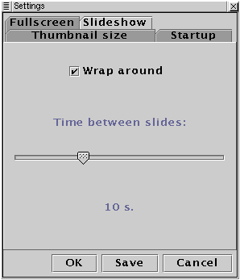
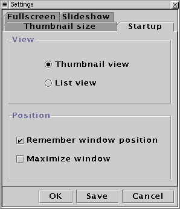
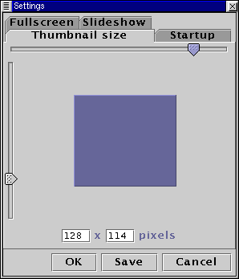

JCDSee Help - Settings |
|
To start the settings dialog select settings from the File menu or press the settings button in the toolbar.
Fullscreen
Select the background color. You can also enable or disable the zoom effect text that is displayed when zooming and setting it's color and duration.
Slideshow

Select if the slideshow should wrap around and the time between sildes in the show.
Startup

Select the active view on startup and if JCDSee should remeber the last window position and size. You can also select to start with a maximized window.
Thumbnail size

Select the size of the thumbnails in the thumbnails view.